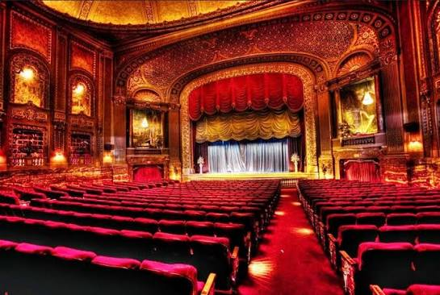

Театр — це особливе мистецтво, яке оживає безпосередньо перед очима глядача і дарує неповторне відчуття співпереживання. На відміну від кінематографа, кожен спектакль тут є унікальним, адже актори щоразу заново проживають долі своїх персонажів на сцені. Справжня магія театру народжується у момент взаємообміну енергією між залом і підмостками, перетворюючи звичайну виставу на глибокий діалог про вічні людські цінності, любов, зраду та пошук істини.
У сучасному світі театральне мистецтво продовжує активно розвиватися, поєднуючи класичні традиції із новаторськими режисерськими рішеннями, цифровими технологіями та інтерактивними форматами. Сьогодні театр залишається не просто місцем для культурного відпочинку, а й потужним простором для роздумів та інтелектуальної дискусії. Він спонукає нас зазирнути всередину власної душі, допомагає краще зрозуміти оточуючих та дарує естетичну насолоду, яка тривалий час відлунює в серці після того, як згасло світло і закрилася завіса.
Головною силою театру є жива взаємодія між акторами та публікою. Виконавці на сцені віддають свою енергію, діляться щирими емоціями — від глибокого розпачу до нестримного сміху. Зал у відповідь реагує затамованим подихом, тихими сльозами або гучними аплодисментами. Саме цей невидимий емоційний обмін робить кожен спектакль унікальним досвідом як для тих, хто на сцені, так і для тих, хто у глядацькій залі.